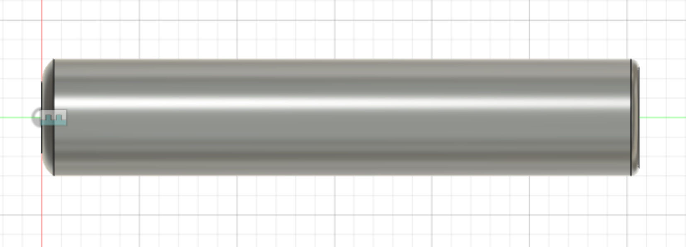
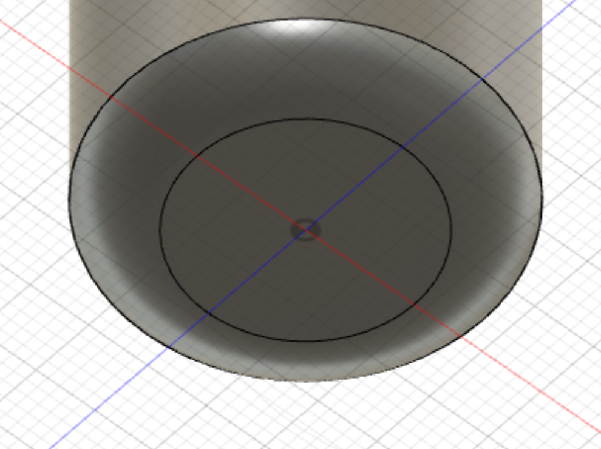
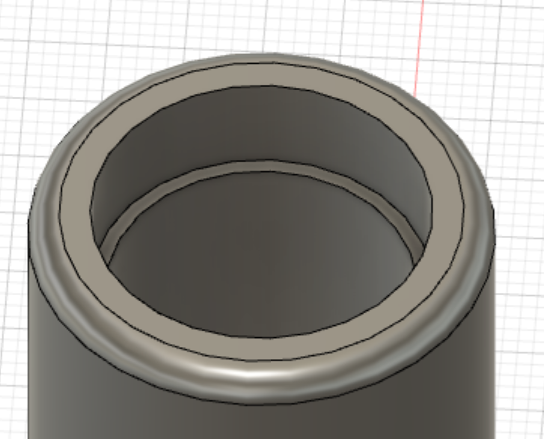
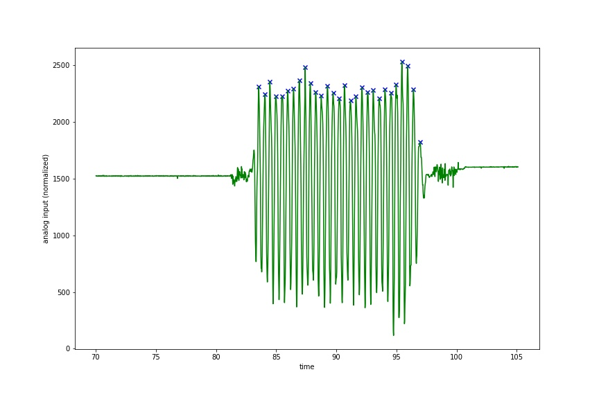

Table of Contents
- TL;DR
- Motivation
- Process Outline
- Housing Design (Week 10)
- Proof Of Concept (Week 11)
- Component Prep
- Assembly
- Data Transmission
- React Native App
- Jump Detection
- Comprehensive Bill of Materials
- Source Code
TL;DR
Over the past few weeks I’ve built a smart jump rope:
As a preview of the final product, I put together this short demo video of the working final product, the jump rope together with a mobile app:
Motivation
I vividly remember my 3rd grade gym class participating in a Jump Rope for Heart Jumpathon. All of the students in our class stood out in the parking lot and jumped rope for a half hour. As I watched other kids run around while jumping, I only knew how to jump backwards and would do the dreaded “double bounce” between jumps.
I rediscovered a jump rope a few months ago and have become an avid jump roper since, watching plenty of Buddy Lee videos in awe. I’ve slowly learned to jump properly and it has become a staple in my workout routine. While I’ve used Strava and other social workout platforms in the past to keep track of my workouts, I haven’t found anything for jumping rope and decided to make my own.
In week 10 of the course, our input devices week, I used a small force sensor to track jumps on my foot. While this sensor worked pretty well, the resulting device was large and had to be taped to my foot. Instead, I opted for building a jump rope that syncs with my phone to track my workouts. There are plenty of jump ropes with digital counters but these ropes typically aren’t workout grade speed ropes and don’t sync the data to an app for the same social fitness tracking as something like Strava. I wanted a device that could measure the frequency of jumps and intensity of my workouts, and track progress over time.
Process Outline
There are several things I will need to build for this that will combine what I have learned about 3D modeling and print, sensors, wireless communication/IoT, and APIs/programming. The end product will consist of an microcontroller circuit in a custom built handle for my jump rope that records information throughout my workout. After the workout is complete, which I will indicate with a button press, the information will be transmitted to my phone where it will be loaded into an app that backs this data up to a database.
Here’s a list of what I will need for the project (a bill of materials):
- 3D printed housing
- Huzzah ESP32 board
- Accelerometer/gyroscope
- Infrared LED
- Other miscellaneous components (wires, resistors, etc.). This will become clear as I fully flesh out the circuit
Data will be read from the accelerometer to determine how the rope is moving (to detect frequency of swings, number of swings, double unders, cross overs, etc.), while the Infrared LED can be used for heart rate monitoring as shown here.
Housing (Week 10)
This week I will start out by designing the housing for my project. I already have a hollow jump rope handle but it is not quite large enough to house the esp32 board, which will be necessary for wireless communication. I will use this handle to gather data using the ItsyBitsy (which it is barely large enough to house). After I’ve gathered data, I will be able to program everything and create slightly large 3D printed housing for the Huzzah Esp32.
To construct appropriate housing, I used parametric design in Fusion 360. The handle itself measured about 150mm:

This handle has an ergonomic design that is nice to hold, and a screw on cap on the left hand end that can be unscrewed to insert weights. A bearing sits in the right hand end for smooth turning of the jump rope. When modeling, I had to keep in mind the inner and outer diameters of the handle as well, which I measured at (approximately) 20mm and 30mm respectively. I also looked up the bearing model which was a 608zz bearing measuring 8x22x7, for inner diameter, outer diameter, and width respectively.
Finally, I measured the limiting dimensions of the Huzzah, ItsyBitsy and accelerometer boards. The lengthwise dimension didn’t matter to me so much as that goes along the length of the 150mm handle. The limiting width dimensions of the Huzzah and ItsyBitsy were 23mm and 16mm respectively. The accelerometer was smaller than both of these so I didn’t need to measure it.
Note that the board cannot sit directly at the diameter either because of the header pins, this is a problem I would tackle later but to begin with, I used parametric design in fusion. I did not make the design very ergonomic to begin with and focused on a bare cylindrical MVP for a first prototype:

At the left end, I have a removable, press fit cap:


The other end of the handle has an inset for the bearing:

The insets and fillets here make this piece best created by 3D printing.
Proof of Concept (Week 11)
This week I ordered a bearing and sent the casing print file to my friend. While waiting for these parts to make the full casing, I put together a smaller circuit using the ItsyBitsy instead of the Huzzah to ensure that the accelerometer would provide data with enough signal for this project to be viable.
The MPU6050 uses I2C communication, so I needed to connect the SCL and SDA pins to the ItsyBitsy’s corresponding pins and also needed to connect VCC and ground. Besides this, there wasn’t anything I needed to connect. For space purposes I decided to solder the accelerometer directly to the IstyBitsy header pins and then solder wires within the header pins to VCC and ground:

I soldered as minimally as possible while maintaining a solid electrical connection on the header pins so that it would be easy to remove later. While this is a bit of a hacky solution for now, the circuit was able to gather data and wasn’t any larger than the ItsyBitsy itself, meaning it would fit into my current housing (my old jump rope handle).
While the circuit was able to gather data, the ItsyBitsy does not come
with a bluetooth or wifi module built in like the Huzzah, and so I had to
find a way to store the data on the ItsyBitsy. Luckily CircuitPython has
a storage
module and a package for interfacing with the MPU6050.
The storage module allows a program to write to the flash memory of the chip.
While there is not a ton of memory, the python os module is able to
check remaining disk space so I was able to make sure I didn’t run out. In
order to set up CircuitPython I first needed to copy a new bootloader to
run python code on the microcontroller. On their site they provide
a uf2
file that can just be copied directly on to the drive.
With everything installed, setting up the MPU6050 was as easy as
import board
import adafruit_mpu6050
i2c = busio.I2C(board.SCL, board.SDA)
mpu = adafruit_mpu6050.MPU6050(i2c)
print(mpu.acceleration)
but printing acceleration just once isn’t very useful.
I needed to combine this with the storage module to write a file.
CircuitPython storage writing is a little complicated. Basically, the
board can be in one of two modes at any given time. Either the script
code.py can write to device storage, or the computer connected to the
microcontroller can write to device storage. This can be configured in the
boot.py file that is run every time the computer is connected:
import storage
computer_has_write = False
storage.remount("/", computer_has_write)
Note that, if you add this boot.py file to your device and reconnect it
to your computer, you will now not be able to edit boot.py or code.py
because the computer does not have write privileges. How can we stop this
behavior then? By using the python REPL on the device we can issue
commands that will be run by the microcontroller to move the boot.py file:
>>> import os
>>> os.rename('boot.py', 'boot.old')
Note that you can access the python REPL for the device through the serial monitor using a program like screen on the appropriate serial port.
The process for uploading code has become a little more complicated with
this added step (normally you can just save changes to code.py), but it
is not overly cumbersome.
Now that we have access to device storage, we can write observations in a loop to a csv:
import time
import os
with open("/test.csv", "a") as fp:
i = 0
while True:
# Write out the data
line = (time.monotonic_ns(),) + mpu.acceleration + mpu.gyro
fp.write('{}\n'.format(','.join(str(a) for a in line)))
fp.flush()
# Make sure there is enough space left on device to continue
if os.statvfs("/")[4] < 20:
break
time.sleep(0.01)
This code prints out the time, acceleration, and gyro information at about 100 Hz, which should be more than enough to track movements of the handle at proper resolution to see jumps. This code should be wrapped in a try, except block to ensure that the device has write access when trying to open the file. This would allow for a more elegant handling of any error. The complete code I used, including the MPU6050 library and dependencies, can be found in this zip.
While this code worked well for many seconds while connected to my computer When I ran this code on the actual device, connected to a 5V battery, however, I encountered an inconsistent issue. Sometimes, the device would reset itself to the default CircuitPython “Hello, World!” program code. The first time this happened I lost all of my code and had to start again. I haven’t been able to determine whether this was because of writing to too much space, protected space, or something entirely different. I was able to collect data after several attempts and got the following:

This plot displays the x, y, and z acceleration over time. I used
a calibration period before the jumping to center the data at rest where
acceleration is 0 for all axes. The z axis seems to have the best signal
on the oscillations of the height of the handle, which is to be expected
given the jumping motion. The most accurate count would be to trace the
handles movement using all three directions of motion but for simplicity
I started looking at just the z data. I used the python libraries pandas
and scipy to do some very basic data analysis:
df = pd.read_csv('test.csv', delimiter='\t', header=None)
df.columns = ['time', 'x', 'y', 'z']
df['time'] /= 1000
df = df.set_index('time')
fig, ax = plt.subplots(figsize=(12, 8))
peaks = df.z.iloc[scipy.signal.find_peaks(df.z, prominence=350)[0]]
plt.scatter(peaks.index, peaks.values, marker='x', color='b')
df.z.plot(color='g')
which resulted in the following plot with peaks:

Overall there were 29 peaks, but I only jumped 15 times over this duration, suggesting some sort of double counting. While this result was not perfect, it validated that there was rich information in the accelerometer data to count jumps.
Component Prep
For the real design, I needed the Bluetooth capabilities of the Huzzah. To make the board smaller, I trimmed off all of the header pins. I first removed all of the black plastic material on the pins:
and then desoldered the pins, heating from the bottom of the board, which I found to be better to avoid pulling the conductive plates off of the board. After desoldering, I fed some spare wire through the SDA and SCL ports, which I then connected to the accelerometer:
With this in place, I needed only to connect the VCC and GND pins of the MPU6050 to the Huzzah, just as with the ItsyBitsy. I again used a makeshift solution with short wires and soldered these together. The final Huzzah assembly was this:

With the Huzzah board put together, I made measurements and adjusted my original housing design. First, I added a slot down a diameter to allow the board to sit in a fixed way. I kept the inner diameter of 20mm and made the slot wide enough to fit the 23mm width of the Huzzah board:
This is my second iteration at a slot down the middle. In my first print, I did not leave enough room for the lipo port and made this slot only 2mm in width to fit the board. After a lot of time spent trying to file the inside and make it bigger to fit the lipo port, I eventually opted to print with this much larger hole.
Besides this change, the overall shape of the print remained largely the same but I also added a larger inset under the bearing so that the electronic components couldn’t interfere with the bearing at all:
Here are the final files I used for the handle and handle cap
The last component I needed was a power supply. While the lipo port on the huzzah would be the best option in normal circumstances, I couldn’t find a lipo battery that would ship here in time for the final project. Instead, I resorted to smaller coin cell batteries. The batteries I had lying around the house all had insufficient current output for the Bluetooth spikes from the Huzzah board, which can reach up to. The 5V rechargeable batteries supplied by our class had output of 1Amp and worked very reliably with the board so I looked to match this as closely as possible. The smallest feasible battery seemed to be the CR123, a common camera battery. I knew I could get this battery and it fit well in the dimensions of the handle, having a diameter of only 17mm. Unfortunately, I did not have an easy way to connect this to the microusb port. To work around this I disassembled a microusb cord:

I ended up removing even these wires in favor of my own soldered on wires.
The final materials for my project, read to be assembled, are shown below:

Assembly
With everything in order, it was time to start putting things together. While my research on batteries lead me to believe I would only need 1 of the CR123 batteries, the voltage and amperage combination of these batteries still proved too low with just 1. Adding a second battery meant my components just barely did not all fit within the housing. I had difficulty holding the batteries together in a secure way. Using electrical tape to hold wires to the battery terminals was not secure. In the end, I disassembled a spare 9V battery holder and used the protrusions that make contact with the terminals of the 9V batteries to make contact with the CR123 batteries. I held these connections together with tape, which was much more reliable than the plain wires. I then soldered these connections to the microusb terminal. I added a rubber band for extra security and ended up with the following hacky power supply for the microcontroller:
As can be seen in the photo, this assembly would not fit fully in the handle.
Next, I had to insert the bearing in the other end of the handle. This was meant to be press fit and it was a tight squeeze, perfectly sized. I ended up using an old bearing as the one I ordered was delayed by the pandemic. The bearing was tight so I first loosened it with acetone, which was a handy trick to loosen it quickly. Then I used my soldering iron to heat the plastic around the bearing before pushing it in. Just heating the rim allows the bearing to slide in more easily and once it was partly in, I pushed it against the flat surface of my desk to make it flush with the handle end:
With almost everything in place, I fed my existing jump rope through the handle:
and inserted the batteries and then the microcontroller into the other end. While the housing didn’t quite fit everything and I couldn’t fit the 3D printed handle cap on, the previous handle had a hollow cap that I taped onto the end:
Data Transmission
With everything assembled, I began working on the Arduino code for data transmission, including the I2C interface in C. Note that I used CircuitPython on the ItsyBitsy for the storage module. Because I was transmitting over Bluetooth on the ESP32, I did not require access to storage. Overall, I found CircuitPython overly complicated and used C in the final product.
The major components of my code were the I2C interface for the accelerometer and the Bluetooth module.
I2C
The I2C library is called Wire. By looking at the data specification sheet for the MPU6050, I found that I could change the sensitivity of the accelerometer with the following transmission with the Wire library:
Wire.beginTransmission(MPU); // Start communication with MPU6050 // MPU=0x68
Wire.write(0x1C); // Talk to the register 1C (accelerometer sensitivity)
Wire.write(0x01); // Write values 1 => +-4g sensitivity
Wire.endTransmission(true); // end the transmission
While I only needed the default +-2g range, knowing how to alter these settings was good. The commands I ended up using were first resetting the device at the start of my setup function:
Wire.begin(); // Initialize communication
Wire.beginTransmission(MPU); // Start communication with MPU6050 // MPU=0x68
Wire.write(0x6B); // Talk to the register 6B
Wire.write(0x00); // Make reset - place a 0 into the 6B register
Wire.endTransmission(true); // end the transmission
As well as requesting Accelerometer data in the loop function:
Wire.beginTransmission(MPU);
Wire.write(0x3B); // Start with register 0x3B (ACCEL_XOUT_H)
Wire.endTransmission(false);
Wire.requestFrom(MPU, 6, true); // Read 6 registers total, each axis value is stored in 2 registers
I parsed the 6 bytes of accelerometer data by reading 6 times and using bitwise operators to combine the information. This combines 2 bytes into a single value for the X, Y, and Z axis:
values[0] = (Wire.read() << 8 | Wire.read()); // X-axis value
values[1] = (Wire.read() << 8 | Wire.read()); // Y-axis value
values[2] = (Wire.read() << 8 | Wire.read()); // Z-axis value
Note that these values are all integers. Another useful piece of information from the datasheet is that dividing by 16384 converts these raw integer signals to corresponding force values in units of “g”, gravitational force units. With this working, I sought to set up Bluetooth.
Bluetooth Low Energy
I hadn’t used Bluetooth before so I set out to understand the protocol and how things worked before approaching any libraries.
This site here was helpful in getting a comprehensive understanding of the technology, but much of it was irrelevant for implementation. The most important aspect of Bluetooth Low Energy for this application was understanding services and characteristics:

Services each have a universally unique identifier (UUID) and can contain
multiple characteristics, which also each have their own unique
identifier. Services are groupings of similar types of actions that
a client or server can take in Bluetooth transmission. One logical setup
for this application would be to have a service for transmission of data
with three channels, or characteristics, one for each axis. While this
would be straightforward in the sense that each characteristic would only
have to transmit a single number, it is less convenient to receive this
data at different times when it is all recorded and transmitted at the
same time. Instead I opted for a single service and single characteristic.
This characteristic would transmit an array of bytes, containing the
integer X, Y, and Z values from the sensor as well as a time reading from
the millis function in Arduino so that if there were irregularly spaced
measurements, the receiver would know.
To create the device and characteristic, I followed the example code for BLE_notify, which is included with the ArduinoBLE library that makes BLE connection relatively straightforward. I first Initialize UUIDs and callbacks for the BLEServer so that the device can keep track of when it is connected and not:
#define SERVICE_UUID "4fafc201-1fb5-459e-8fcc-c5c9c331914b"
#define CHARACTERISTIC_UUID "beb5483e-36e1-4688-b7f5-ea07361b26a8"
class MyServerCallbacks: public BLEServerCallbacks {
void onConnect(BLEServer* pServer) {
deviceConnected = true;
};
void onDisconnect(BLEServer* pServer) {
deviceConnected = false;
}
};
Then in my setup code, I create the device, service, and characteristic.
// Create the BLE Device
BLEDevice::init("ESP32");
// Create the BLE Server
pServer = BLEDevice::createServer();
pServer->setCallbacks(new MyServerCallbacks());
// Create the BLE Service
BLEService *pService = pServer->createService(SERVICE_UUID);
// Create a BLE Characteristic
pCharacteristic = pService->createCharacteristic(
CHARACTERISTIC_UUID,
BLECharacteristic::PROPERTY_READ |
BLECharacteristic::PROPERTY_WRITE |
BLECharacteristic::PROPERTY_NOTIFY |
BLECharacteristic::PROPERTY_INDICATE
);
// https://www.bluetooth.com/specifications/gatt/viewer?attributeXmlFile=org.bluetooth.descriptor.gatt.client_characteristic_configuration.xml
// Create a BLE Descriptor
pCharacteristic->addDescriptor(new BLE2902());
// Start the service
pService->start();
Finally, we must let other Bluetooth devices know we are available. This is referred to as advertising. Also during setup, we begin advertising the availability of the service.
// Start advertising
BLEAdvertising *pAdvertising = BLEDevice::getAdvertising();
pAdvertising->addServiceUUID(SERVICE_UUID);
pAdvertising->setScanResponse(false);
pAdvertising->setMinPreferred(0x0); // set value to 0x00 to not advertise this parameter
BLEDevice::startAdvertising();
In my loop after storing the values for the accelerometer in the values array above, we copy the bytes from this array to the characteristic and use the notify function to transmit the data to a connected device.
pCharacteristic->setValue((uint8_t*) &values, 10);
pCharacteristic->notify();
Note that I wrap this notification, as well as the I2C communication, in an if statement that checks if the device is connected via Bluetooth. This avoids unnecessary computation when there is nobody to communicate with.
The full final code for the Arduino can be found here.
React Native Mobile App
Simultaneous to developing the Android code, I needed to develop another Bluetooth device to double check the transmission was working properly. I have used React Native to build cross platform apps before, and Expo makes this particularly convenient by abstracting away any code specific to iOS or Android so that you can program in pure Javascript to create an app that works for both platforms. Unfortunately, however, Expo does not yet support Bluetooth, so I opted for vanilla React Native. This came with a learning curve as I had to do more manual setup of my environment to debug the app on my phone. I found the guides on project setup and device-based debugging to be particularly helpful.
I develop on Linux and was developing for Android so I installed Android
Studio and found it very important that I setup the corresponding
environment variables in my ~/.bashrc config file:
export ANDROID_HOME=$HOME/Android/Sdk
export PATH=$PATH:$ANDROID_HOME/emulator:$PATH:$ANDROID_HOME/tools:$PATH:$ANDROID_HOME/tools/bin:$PATH:$ANDROID_HOME/platform-tools
With Android Studio and node.js installed, I enabled USB debugging on my
Android phone and plugged it into my computer. From there it was as easy as running
npx react-native init myProject
npx react-native start
npx react-native run-android
to start developing with live updates from the code to my phone.
Given that the code for this part of the project is several hundred lines, it would be difficult to comprehensively explain it all here. I will focus on my usage of the Bluetooth library, and omit most of the React specific tutorial information besides setup as there are plenty of other great tutorials out there for that.
For the project I used this library providing BLE support for react native apps. The documentation of this library is not the best so I had to do some digging in the code to fully understand how to use it.
First, the Bluetooth manager object allowed me to scan for an connect to devices, the important methods I used were:
import { BleManager } from 'react-native-ble-plx';
const manager = new BleManager();
manager.startDeviceScan(null, null, onDeviceFound); // calls onDeviceFound whenever a new device is discovered (includes repeats)
manager.stopDeviceScan(); // stops current scan
manager.connectToDevice(deviceId); // connects to device with id deviceId, returns a device object
Once connected to a device, several other methods become available. The following methods allowed me to find the characteristic with the right UUID to read from to.
device.discoverAllServicesAndCharacteristics();
device.services();
device.characteristicsForService(service.uuid)
Each characteristic returned by the last function has a monitor method
that will be called every time data is received. I process this data by
adding each data point to a long list of data points. In this large array,
I am able to process the stream of data in near real time. The data is
received as a string of characters in base64 encodings. Some of these
could read AQAAAA==, for example. To decode this I used a library to
convert the base64 string into raw bytes. I then built up the raw bytes
into 16 and 32 bit integers (16 for the x, y, and z measurements and 32
for the time) being very careful about bit ordering (little endian vs. big
endian).
One of the first things I did after loading the data was to create a real
time plotting chart to visualize the data. For this I used the
react-native-svg-charts library.
This
pull request specifying how to make charts with multiple lines was
especially helpful. The full code for the chart I made can be found in the
MultlineChart.js file in the source code at the end of this section.
Being able to visualize the data helped me understand what patterns
I could pick up on to determine when a jump had occurred. Here is an
example of one of the charts I used for debugging:
I also added the ability to export the data to csv. I used this for easier
data processing in python, where libraries like numpy and scipy in
a Jupyter notebook make for much easier data analysis than javascript in
a mobile app. The interface was pretty minimal beyond this, containing
a menu for connecting Bluetooth devices:

and an even simpler interface with developer mode disabled:
The source code for the app is available here
Detecting Jumps
With the transmission and interface working properly, the final part of the project was to robustly detect the number of jumps given the accelerometer data. By trying several different algorithms I came up with what I found to be the best solution, but it is a constant work in progress.
The main idea behind my jump detection algorithm is that jumps will be represented by peaks in the Z and X axis data (the y-axis is along the direction of the handle and won’t have much variability for normal jumps). Whether the peak is in the Z or X axis depends on the orientation of the handle in the jumpers hand. In the simplest case, the Z axis will be facing upwards and the greatest variability will be in this axis as the jumper jumps upwards. Because of the circular motion of the wrists while jumping, there will still be some movement in the X direction.
I first focused only on the Z axis and thought about how to detect peaks. Largely inspired by this post on Stackoverflow, I made the assumption that peaks would lie far away from the running mean of the data. I computed a running mean and standard deviation in real time as data came in based on the last $k$ data points. If the next data point was greater than $z$ standard deviations away from this mean then that data point is considered either a positive or negative peak. If we keep the influence of peaks in the running average we could have many peaks in a row that bring up the mean and cause new peaks to go undetected. Instead, detected peaks are cut by a multiplicative factor $i$ in the calculation of future means and standard deviations.
In javascript, we have
const sum = a => a.reduce((acc, val) => acc + val);
const mean = a => sum(a) / a.length
const variance = (a) => {
const m = mean(a);
return mean(a.map(val => Math.pow(val - m, 2)));
}
// determine whether value is a peak, given an array lag of the past k points
const isPeak = (lag, value, z_threshold) => {
const z = (value - mean(lag)) / Math.sqrt(variance(lag));
if (Math.abs(z) > z_threshold) return Math.sign(z);
return 0;
}
In addition to this code, we need to maintain a list of data as we see it
and data that is modified as detailed above by the multiplicative factor
$i$ depending upon what isPeak returns.
This running average technique left me with 3 parameters to play with. I found $z=2.5$ with $k=40 and $i=0.1$ to be a good combination through several sets of jumping rope. This consistently gets accurate counts within 1 or 2 counts which seem to be from artifacts at the beginning or end. Sometimes, however, the count is very inaccurate. This is notably true whenever I am not conscious of the orientation I hold the rope in at the start. Looking at the X axis data as well, or some combination of the two, could prove useful in making the algorithm more robust to this kind of noise. Overall I’m happy with how it performs, though:

There are 24 unique peaks here (with a peak occurring when the signal line transitions from a non-1 value to 1) and this is reasonably close to the 22 jumps I did in this recording, especially when accounting for the boundary effects induced by waiting for $k$ points before counting.
Going forward, I plan to experiment with different functions of the X and Z axis signals. When I eventually attempt to count cross overs and double unders, the Y-axis data could prove very relevant as well.
As an example, here’s a video of very noisy data coming from a more complicated jump routine that I hope to be able to account for on the future:
Bill of Materials
The project materials are very straightforward:
- 2 CR123 Batteries
- 1 MPU6050 Acclerometer Board
- 1 Huzzah Feather ESP32 Board
- 1 Microusb cable
- 1 608zz Bearing
- Connecting wire
- Soldering Iron
- Electrical Tape
- 3D Printed Handle and Cap
Beyond these physical components, a computer with reliable internet connection is needed to upload and run the code in the section below.
Source Code
While snippets can be found above, the full source code and STL files for this project are available here:
- React native app: react.zip
- Arduino app: ble.ino
- 3D Printed Components: handle and handle cap